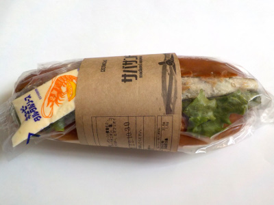

IZUMOAIのサバサンド
2022/10/30

近頃土日になると各地であるマルシェで買いました。
後から思ったことですが、天気も良かったのでお店にドライブして買いに行けば良かったです。たぶんそっちの方が楽しかっただろうな。
サバサンドですが、袋を開けたらパンの香ばしい匂いがしました。サバの匂いじゃないんですね。
大きなサバが入ってて、サバ味があるんですがあっさりとしていました。焼きサバとか塩サバみたいな濃い味ではなかったので、パンとの相性が良かったです。
タルタルソースや中に入ってたレモンとも味がよく合ってて、美味しかったです。
サバはノルウェー産、お値段は600円でした。